Personal calibration
A guided 10-step wizard measures your screen edges and your look-away poses, then sets limits that fit you, your chair and where your camera sits.
Privacy screen for Windows
Umbra uses your webcam to notice when you stop looking at your screen, then covers it until you look back. Nobody reading over your shoulder, no screen left open when you turn to talk to someone.
Free & open source · Windows 10 & 11 · Video never leaves your PC
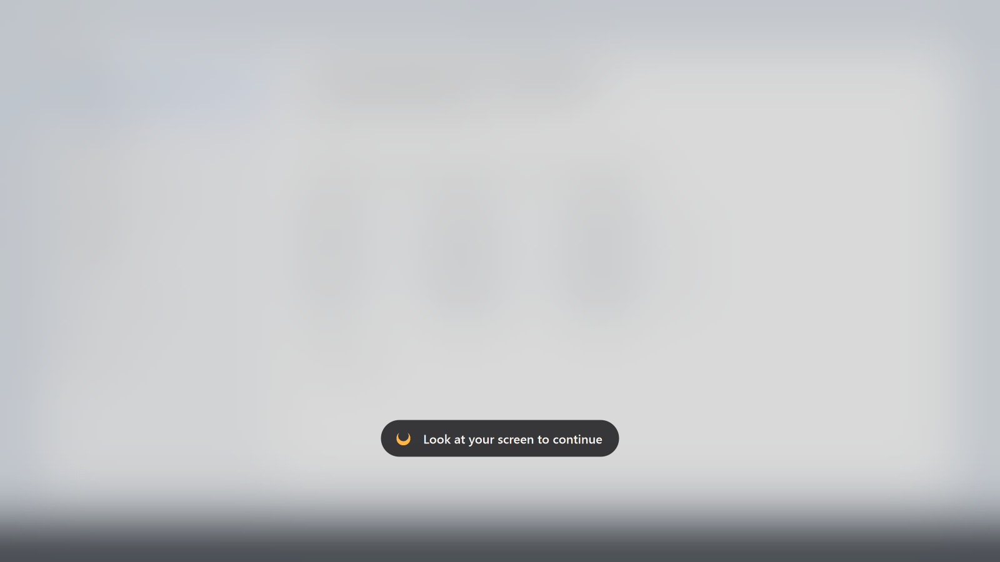
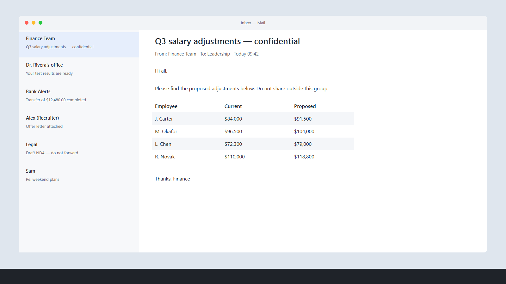
MediaPipe face tracking measures where your head is turned and where your eyes are pointing, about 15 times a second.
Turn your head, glance aside, look at your phone or leave your desk for more than 0.7 s and Umbra reacts. Blinks and quick glances don't count.
A blur, your own image, a GIF or video, or a solid colour appears instantly. Look back and it disappears in about 0.15 s.
Built to stay out of your way until someone else is looking.
A guided 10-step wizard measures your screen edges and your look-away poses, then sets limits that fit you, your chair and where your camera sits.
Live blur of what's behind, a custom image, an animated GIF or looping muted video, or a solid colour, with an optional message on top.
Press F8 anywhere to switch protection on or off, or choose your own key combination. Pause for 5 minutes to an hour from the tray.
Every frame is processed in memory on your PC. Nothing is recorded, saved or uploaded, and the camera is released when protection is off.
The cover lets clicks pass through and never takes keyboard focus. If the camera disconnects, your screen stays visible and Umbra retries on its own.
Optionally hide the screen when a second person is looking at it, even while you're still looking yourself.
Covers every connected display and follows monitors as you plug them in or unplug them.
One checkbox adds Umbra to your sign-in. It sits quietly in the system tray with an icon that shows its state at a glance.
About 11 ms of CPU per analysed frame. Lower the analysis rate in Settings if you want to save even more.
Choose what appears when you look away.
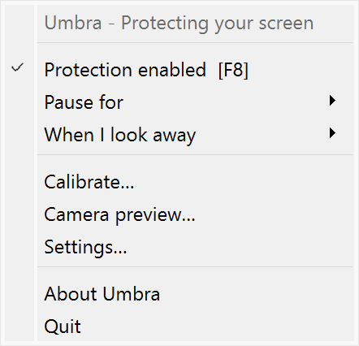
Tray menu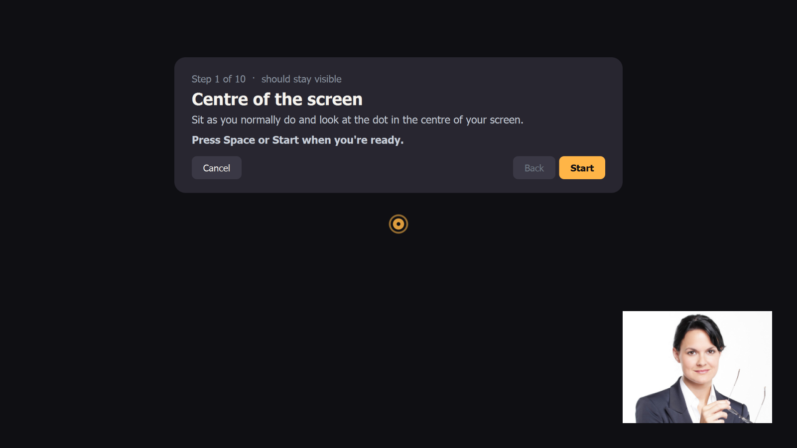
Calibration: centre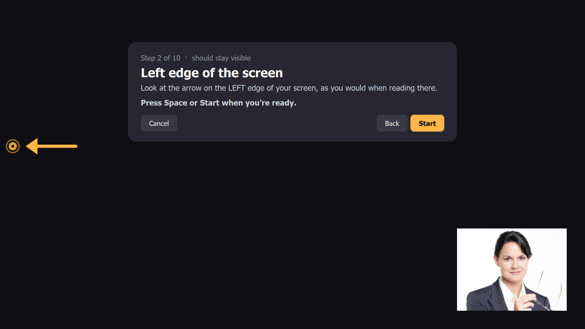
Calibration: screen edge Calibration: look away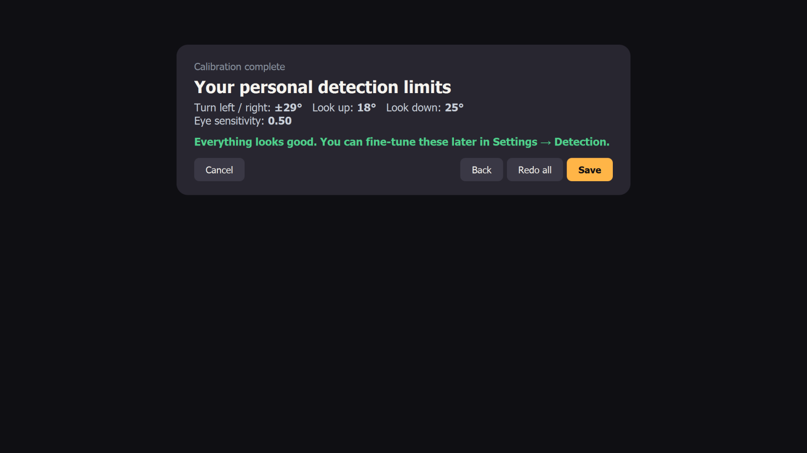
Calibration: your limits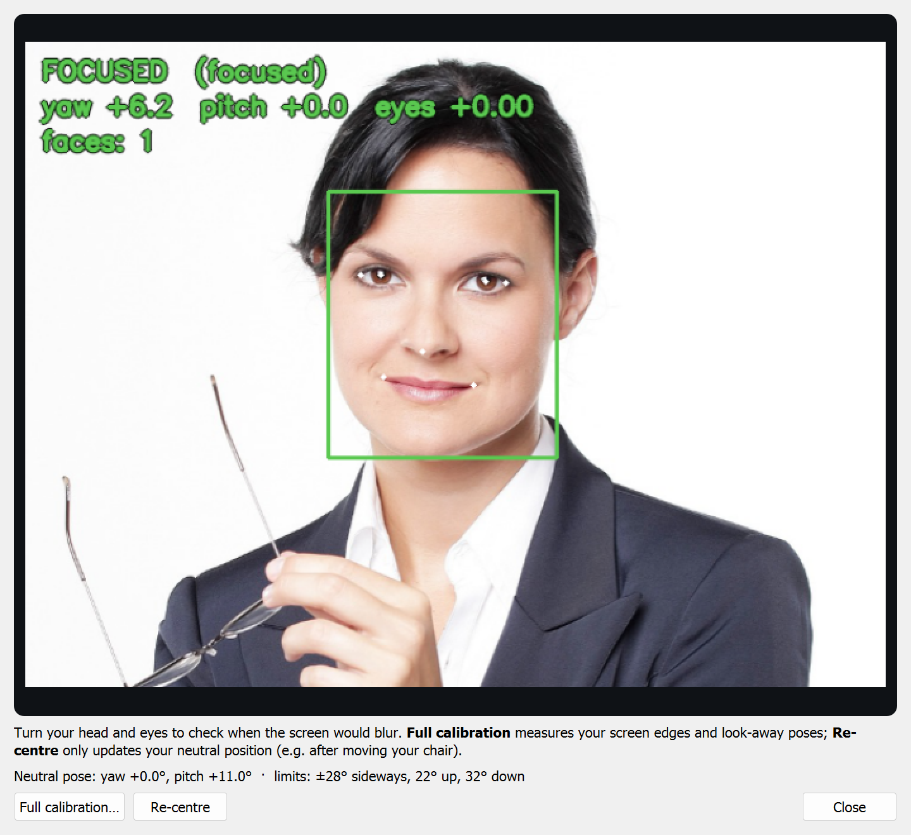
Camera preview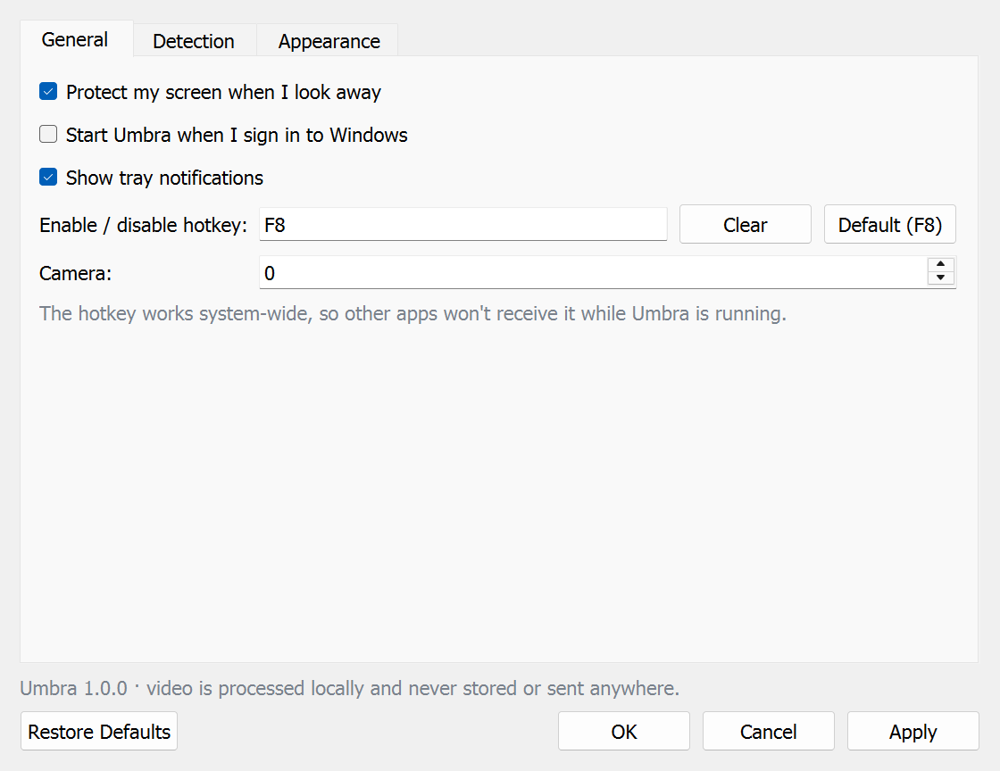
Settings: General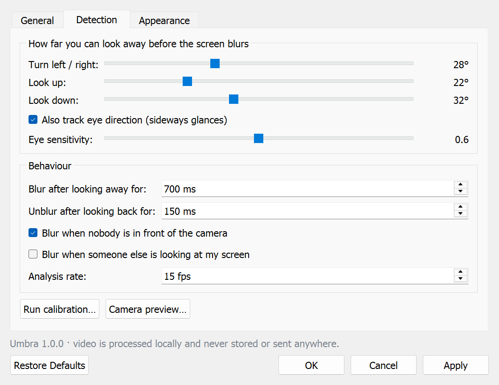
Settings: Detection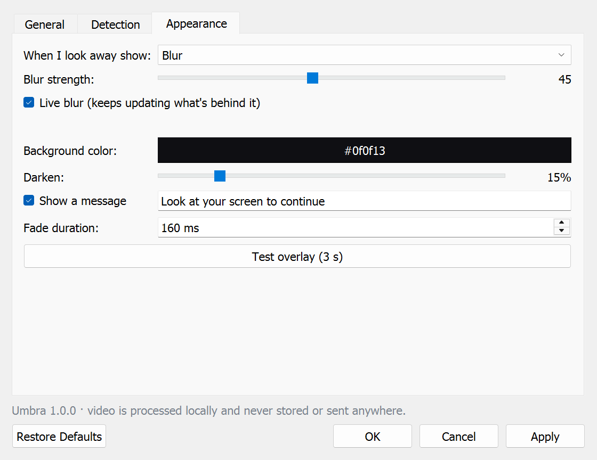
Settings: Appearance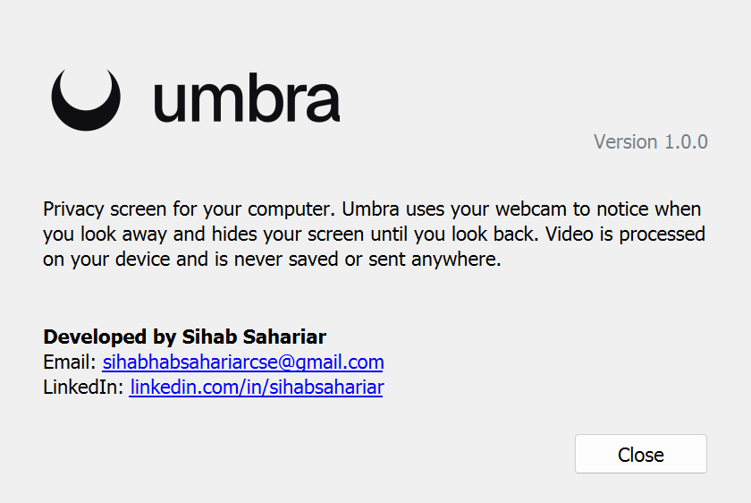
AboutCover-style screenshots use a made-up demo inbox. The camera preview uses MediaPipe's public sample portrait.
Umbra-Setup.exe from the latest release.You need Windows 10 or 11 and a webcam. Setup installs just for you by default, so no administrator rights are needed, and Umbra doesn't need an internet connection.
Portable option: download Umbra-win64.zip instead, extract it anywhere and run Umbra.exe.
Uninstall: go to Windows Settings → Apps → Installed apps → Umbra → Uninstall. You'll be asked whether to keep your settings.
The calibration wizard opens automatically the first time. It takes about a minute and makes detection fit you and your desk.
You can rerun it any time from the tray menu (Calibrate…). If you only moved your chair, Camera preview → Re-centre is quicker.
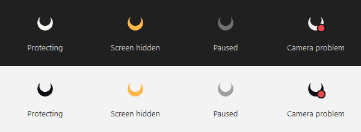
| Icon | Meaning |
|---|---|
| Crescent | Protecting: you're looking at the screen. |
| Amber crescent | Screen is hidden right now. |
| Faded crescent | Paused or turned off. |
| Crescent with red dot | Camera problem. Hover for details. Your screen stays visible. |
Right-click for the menu. Double-click to open Settings. The icon switches between light and dark to match your taskbar.
Open from the tray: Settings…
| Tab | Setting | What it does |
|---|---|---|
| General | Protect my screen | Master on/off switch. |
| Start with Windows | Launch Umbra silently when you sign in. | |
| Hotkey | Click the box and press any key combination. Default F8. | |
| Camera | 0 is your default webcam; try 1, 2… for external cameras. | |
| Detection | Left / right, up, down | How far you can turn before the screen hides. Calibration sets these for you. |
| Eye tracking | Also react to sideways glances while your head stays still. | |
| Blur after | How long you must look away (default 700 ms). | |
| Unblur after | How quickly it comes back (default 150 ms). | |
| Nobody in front | Hide the screen when you leave your desk. | |
| Someone else looking | Hide when a second person faces the screen. | |
| Appearance | When I look away show | Blur, custom image, GIF / video, or solid colour. |
| Blur strength, Live blur | How strong the blur is, and whether it keeps updating. | |
| Darken, Message | Dim the cover and show text such as "Look at your screen to continue". | |
| Test overlay | Shows your cover for 3 seconds so you can check it. |
Run Calibrate… again and look at the actual edges of your screen during the edge steps. You can also raise the angles or the Blur after delay in Settings → Detection. If it happens when glancing at the keyboard, raise Look down.
Open Camera preview… and turn your head: the readout shows FOCUSED or AWAY and why. Lower the angles, or rerun calibration and turn further during the look-away steps.
Another app (Teams, Zoom, the Camera app) may be using the webcam, or camera access may be off in Windows Settings → Privacy & security → Camera. For an external webcam, try camera 1 or 2 in Settings → General. Umbra retries every few seconds.
Another program may already use that key. Umbra tells you when it can't register one. Pick a different combination in Settings → General.
The face tracker needs to see your face. Add some light in front of you rather than behind you.
Borderless-windowed apps and ordinary windows are covered. Exclusive-fullscreen games draw above everything and can't be covered.
Umbra processes each camera frame in memory to measure head and eye direction, then throws it away. It never records, saves or uploads video or images, and it doesn't connect to the internet except once, to download the face model if it's missing. When protection is off, the camera is released. Settings live in %APPDATA%\Umbra\settings.json.
Umbra stands on the work of these projects. Thank you to everyone who builds and maintains them.
Google's on-device face landmarker powers the head-pose and eye-gaze tracking.
Apache 2.0Camera capture, image processing, the blur itself and video playback.
Apache 2.0The tray icon, windows, overlays, settings and every pixel of the interface.
GPL v3 / LGPL v3The maths behind pose estimation, calibration and image buffers.
BSD 3-ClausePackages Umbra into a standalone Windows app.
GPL 2.0 with bootloader exceptionThe language Umbra is written in.
PSF LicenseThe typeface of the Umbra wordmark and this site, by Vercel.
SIL Open Font License{kind=link}
{kind=link}
{kind=link}
{kind=link}
{kind=link}
{kind=link}
{kind=link}
{kind=link}
{kind=link}
{kind=link}